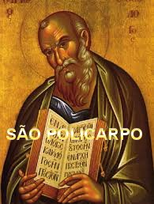
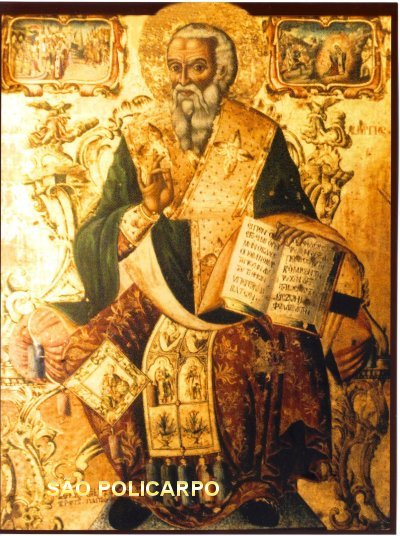
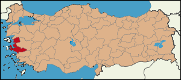
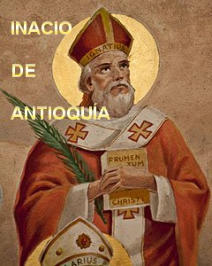
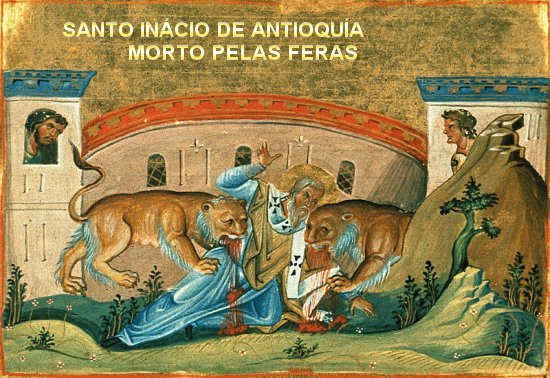

NASCIMENTO DE UM SANTO
DESDE O PRINCPIO
Policarpo nasceu em Esmirna, na
Turquia, de uma rica e nobre famÉlia crist, no ano 69 d.C. Desde criana até
sua juventude, viveu com seus pais e irmos, conforme 
Ele era um menino estudioso e obediente, muito aplicado em todos os seus deveres, e na medida em que atingiu a maioridade, demonstrou certo e profundo interesse pela religio, frequentando os ambientes e as reunies dos cristos, assim como participando das cerimnias na Igreja com interesse e devoção. E foi justamente naqueles encontros para estudo e nas celebraes religiosas, que teve oportunidade de conhecer São João Evangelista Apóstolo de JESUS e para sua satisfao e imenso prazer, na poca propécia, se tornou Discpulo dele.
A data que marcou este memorvel acontecimento não ficou devidamente esclarecida, porque existem hagigrafos que fixaram o ano 87 dC, outros em 89, e ainda outros fixaram o ano 90 dC, quando ele tinha 21 anos de idade. Importante, todavia, destacar que ele sempre foi um homem respeitoso com excelentes qualidades pessoais, de carter ntegro e que cultivava com seriedade o direito e a razo, buscando atravós do estudo e dos ensinamentos do Apóstolo João, sedimentar na mente e no coração, os preceitos Divinos e o impressionante e admirvel Amor de JESUS por toda humanidade.
Policarpo foi Batizado pelo Apóstolo João e teve a graça de conhecer e conviver com diversos Apóstolos de JESUS. Dedicado e repleto de carinho e amor pelo trabalho evangelizador, ele sentia a fora Divina lhe impulsionar com vivacidade em suas coerentes e fiis realizaes, onde estivesse, consolidando a integridade da sua fé, tornando-o ainda mais resoluto e respeitado por todos, inclusive pelos seus adversórios.
O trabalho era intenso e diversificado, e por isso, em muitas ocasies ele partia sozinho para realizar missóes e evangelizao, ou auxiliar numa obra que ainda não estava bem estruturada, necessitando de uma energia maior, mais forte e decidida.
PROVNCIA TURCA
Em Esmirna, onde ele nasceu, foi onde comeou o seu trabalho. Era uma cidade de porte mdio ao sudoeste da Turquia, na regio do Mar Egeu, que possu um notvel golfo martimo, o qual ensejou o acesso e grande movimentao de embarcaes vindas de muitos pases. Hoje considerada a terceira cidade da Turquia em desenvolvimento e progresso. Dentro da Provncia a cerca de 30 quilàmetros, está feso, onde existe a Casa da SANTSSIMA VIRGEM MARIA. Hoje, feso somente guarda suas runas e lembranas, patrimnio mundial. Mas naquela poca era uma grande e bonita cidade, tendo alcanado um progresso admirvel, sendo inclusive considerada a segunda cidade mais importante do mundo, somente inferior a Roma, que era a capital do Grande Império Romano. Ento, em feso e em toda aquela regio, se congregava e movimentava pessoas de todas as naturezas, raas e crenas, com intensa agitao no trabalho e no lazer. Significa dizer que era um campo vastssimo a ser evangelizado. Hoje, os mais respeitados autores chegam afirmar, que a pregao dos Apóstolos e dos Discípulos dos Apóstolos, foi to efetiva e benfica, que o Cristianismo no sóculo II naquela regio, predominava na maioria dos corações.
IGREJA DE FESO E IGREJA DE ESMIRNA
As duas Igrejas também faziam parte das Sete Igrejas da sia, que estáo mencionadas no Livro do Apocalipse, as quais, os Anjos delas, receberam mensagens e recomendaes do SENHOR, atestando assim, as dificuldades que enfrentavam:
Ao Anjo da Igreja de feso, o SENHOR disse que conhecia a tua conduta, tua fadiga e tua perseverana. ELE estimulava os membros da Igreja a continuarem fiis, porque aflua cidade gentes de variadas correntes de pensamentos e religies, e muitos deles deturpavam o Evangelho com grosseiras teorias e falsos argumentos. Mas Policarpo e os chefes cristos iluminados pelo ESPÍRITO SANTO souberam distinguir o erro e a mentira, e buscaram corrigi-los sem demora.
Quanto a Igreja de Esmirna, o SENHOR preveniu as autoridades religiosas que falsos judeus caluniavam os cristosó, procurando tornar tensas as relaes entre os cristos, e com o povo e as autoridades locais. Era um emaranhado de intrigas e despeito que incidiam violentamente contra a fidelidade crist. Eram na verdade, alguns dos melindrosos e dedicados trabalhos dos Apóstolos de JESUS e dos seus Discípulos, entre eles: Policarpo de Esmirna, que buscavam solucionar todas as dificuldades, com respeito e dignidade.
SACERDOTE E BISPO DE ESMIRNA
Por sua admirvel e preciosa
dedicao, mantendo uma convivncia fraterna e operosa junto aos Apóstolos do
SENHOR, tornou-se Sacerdote e gradualmente passou 
Como Bispo cresceu ainda mais as suas atividades e providáncias, pois se empenhava em conhecer cuidadosamente o seu rebanho, ajudá-lo nas necessidades, aconselhar e infundir a verdade crist em todos os corações. Sem dávida, foi também grande oportunidade que ele teve para revelar sua santidade em plenitude! Policarpo era amigo de todos, embora sempre fizesse o povo compreender a primordial necessidade de cada pessoa considerar a existncia, como uma missão, dada por DEUS, em benefécio de cada um. Ele explicava: Porque atravós dela, da sua missão, cada criatura ter a oportunidade de alcanar a eternidade junto de DEUS e de todos os Santos.
Ele também era amigo daqueles que já trilhavam o caminho da verdadeira santidade. Entre eles destacamos o grande Santo Incio de Antioquia que também era um que sempre correspondia com ele e que escreveu cartas a Igreja de Esmirna. Por fim, quando Incio de Antioqua condenado pelo Imperador Romano a morrer no Coliseu Romano entregue as feras, a caminho do martrio passou na residáncia Episcopal Romana em 107 d.C, onde o Bispo Policarpo se encontrava; rezaram juntos e se despediram.
Importante mencionar, nas cartas que Santo Incio de Antioquia escrevia a Policarpo e a Igreja de Esmirna, ele fazia questáo de enaltecer e evidenciar o admirvel e cuidadoso trabalho, assim como, as preciosas qualidades do seu amigo Bispo Policarpo.
Santo Irineu, Bispo de Lyon, na Frana, foi Discpulo de Policarpo e tinha verdadeira admirao por sua santidade. Durante um bom tempo trabalharam juntos. Depois, quando o dever e os compromissos missionrios os mantiveram distantes, Santo Irineu lhe escreveu diversas missivas, e depois da morte dele, foi o seu primeiro bigrafo.
OBRAS DO BISPO POLICARPO

A Epéstola de Policarpo foi uma iniciativa em atendimento ao pedido dos prprios filipenses, que lhe solicitou palavras e exortaes fé para estimular o povo, e também, solicitou-lhe que enviasse uma cpia da Epéstola em outra missiva endereada a Igreja de Antioquia, com a mesma finalidade. Por fim, os filipenses também pediram que lhes enviasse qualquer Epéstola de Santo Incio, com conselhos e exortaes, se ele possusse e se pudesse. Este derradeiro pedido bem relevante, pois Santo Incio em outra poca havia solicitado s igrejas de Esmirna e de Filadálfia que enviassem congratulaes a Igreja de Antioquia pela restaurao da paz. Desse modo, podemos supor que ele também, tenha dado as mesmas recomendaes aos filipenses quando esteve em Filipos.
Na sua poderosa Epéstola, Policarpo recomenda a necessidade de ser mantida a fé em CRISTO, com uma catequese clara e objetiva, que por certo ajudar os cristos a raciocinar na necessidade de ser cultivada a fé, proteg-la e guardá-la com a pregao da Verdade, sendo explicada diariamente para tranquilidade de todos os espíritos desejosos da salvação. Na sua missiva menciona trechos da Epéstola que São Paulo escreveu aos filipenses, da mesma maneira que usa citaes do Antigo e do Novo Testamento. Também, repete muitas informaes recebidas dos Apóstolos, especialmente de São João Evangelista. E, sobretudo, ele mantm um raciocnio com plena e robusta argumentao cheio de verdade, exortando os filipenses a uma vida virtuosa, ao cultivo e realizao das boas obras e firmeza de coração, mesmo ao preo de morte, se necessório fosse, considerando que também eles, como toda a humanidade foram salvos da morte eterna, pela fé na Redeno de CRISTO. Isto porque, se JESUS não tivesse vindo, a humanidade não teria salvação. Nesta missiva, Policarpo com palavras fortes, faz sessenta citaes do Novo Testamento, das quais trinta e quatro foram retiradas dos escritos de São Paulo, evidenciando assim, que ele tinha um profundo conhecimento da Epéstola do Apóstolo São Paulo aos Filipenses, assim como, dos demais escritos contidos no Novo Testamento.
Por isto, ele considerado uma testemunha valiosa da vida e da obra da Igreja primitiva. Diversos hagigrafos estudiosos e colecionadores das informaes sobre a vida do Bispo Policarpo, imaginam que em face do seu amplo conhecimento da Sagrada Escritura, bem possóvel que ele tenha sido um daqueles que ajudou a compilar, editar e a publicar o que mais tarde passou a ser denominado Novo Testamentoù. Por isso, voz corrente na Igreja que Policarpo de Esmirna, junto com Clemente de Roma e Incio de Antioquia forma o trio de personalidades mais importantes dos Padres ApostÉlicos.
Assim sendo, a Igreja de Esmirna, junto com a Igreja de feso que foi fundada por São Paulo, tendo o Apóstolo João Evangelista entre eles permanentemente, uma testemunha verdadeira da Tradio dos Apóstolosó.
RECONHECIMENTO PéBLICO
A fama de Santidade de Policarpo se espalhou por todas as regies. Suas celebraes e suas homilias eram participadas e ouvidas com muito respeito e ateno. Nelas sempre realàava o seu imenso e fiel amor a DEUS e sua preocupao maior, em seguir as doutrinas Divinas e de não suportar a heresia. Só atendia os hereges dentro dos limites da caridade crist. Santo Irineu, Bispo de Lyon, um de seus discípulos descreve sobre ele numa missiva: Um homem que era de estatura muito maior e uma testemunha mais firme da verdade do que todos os herticos gnósticos que ficam pregando grosseiras inverdades contra o cristianismo. Na manifestao da sua simpatia e admirao por Policarpo, Santo Irineu acrescentava: Posso dizer até o lugar onde ele se assentava para falar, a dignidade e o respeito de como entrava e saa, o seu santo modo de viver, seu aspecto fésico, a tranquilidade e o fervor fiel das suas prelees multidáo, como se referia as suas relaes de amizade e de fé com o Apóstolo João Evangelista e com os outros Discípulos do SENHOR, como relembrava as palavras Deles e o que ouvira a respeito das pregaes de JESUS. Era imensamente admirvel! Posso atestar diante de DEUS, que aquele presbtero era um homem santoù.
E verdadeiramente, Santo Irineu não exagerava, pois Policarpo não transigia e era bastante enrgico quando se tratava da salvação de almas.
Conta-se que certa ocasio em Roma, na rua cruzou com o herege gnóstico Marcio, cuja heresia causava grandes aborrecimentos a Igreja Catélica. Ele não parou, seguiu em frente. O herege meio sem jeito e sem graça, perguntou;
- Não me conheces?
Ele respondeu:
- Conheo sim, e sei que tu s o primognito de satanós.
Também em sua obra Contra as Heresiasí , relembra o quanto João Evangelista detestava aqueles terrveis heresiarcas que andavam pregando as doutrinas mais absurdas, fazendo confusóes nos corações bem intencionados. São Policarpo de Esmirna contava que certa vez o Apóstolo João Evangelista entrou nas Termas de feso. Mas observando que là se encontrava o herege Cerinto, deu meia volta e acelerou o passo para sair rapidamente daquele local, dizendo: Fujamos daqui, o prdio pode desabar sobre nós, pois aqui dentro está o terrvel Cerinto, inimigo da verdade! E acelerou o passo para sair daquele local.
Todos, sem excees, afirmavam: O Bispo Policarpo sempre ensinou o que aprendera dos Apóstolos, a mesma Doutrina que a Igreja transmite e que a nica verdadeira. Esta realidade, todas as Igrejas da sia e todos os sucessores de Policarpo atestam e confirma, esse homem um testemunho da verdade.

